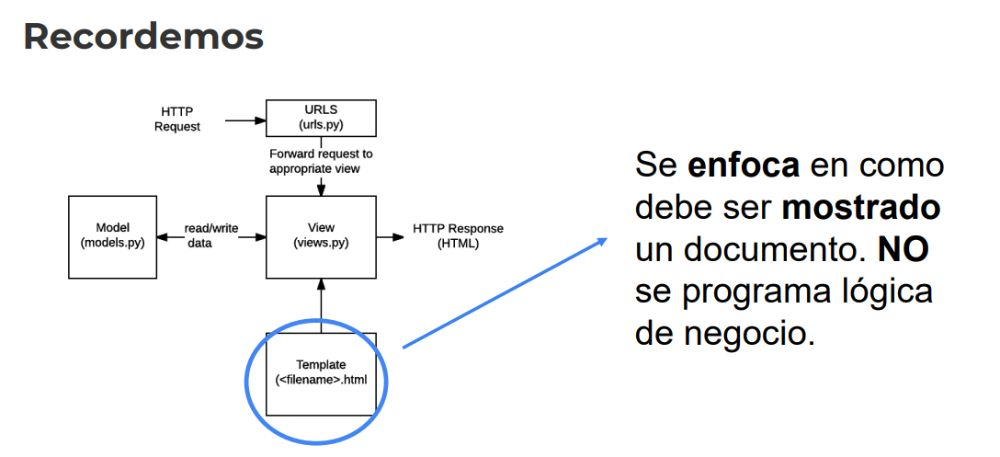

Desarrollo Django
1. ¿Qué es DTL?
El Lenguaje de Plantillas de Django (Django Template Language) es un
lenguaje que está diseñado para lograr un equilibrio entre potencia y
facilidad. Está pensado para que aquellos que están acostumbrados a
trabajar con HTML se sientan cómodos. Si tiene conocimiento de otros
lenguajes de plantillas basadas en texto como Smarty o Jinja2, se
sentirá como en casa con este lenguaje.
2. Recordemos

3. Variables
4. Tags (etiquetas)
Simples..
csrf_token:
{% csrf_token %}
Argumentos:
url:
{% url 'nombre-url' v1 v2 %}
cycle:
< li style='color:{% cycle 'red' 'blue' %}'> -> Intercalar colores.
item
< /li>
include:
{% include "cac/template.html" %}
Apertura y Cierre:
if:
{% if variable == 1 %}
< h1>Hello!< /h1>
{% endif}
for:
< ul>
{% for x in frutas %}
< li>
{{ x }}
< /li>
{% endfor %}
< /ul>
5. Tag: Filter
{% filter upper %} -> Lo pone en mayusculas
< h1>Hola Maaat < /h1>
{% endfilter%}
{% filter first | upper %} -> Pone la primera en mayuscula
< h1>Hola Maaat < /h1>
{% endfilter%}
* La forma más común es .. Mezclado con variables.
< h1>Hola {{ nombre|upper }}, como andas? < /h1>
< h1>Hola {{ nombre|first|upper }}, como andas? < /h1>
6. Tag: Comment

Comentarios:
< h1>Buenas Gente!< /h1>
{% comment %}
< h1>No se verá!< /h1>
{% endcomment %}
Comentarios con descripcion:
< h1>Buenas Gente!< /h1>
{% comment "este era el mensaje oculto" %}
< h1>No se verá!< /h1>
{% endcomment %}
Comentarios pequeños:
< h1>Hola gente # comentario oculto #} !< /h1>
* Mejor usar git para comentar *
< br> -> No usar el salto de línea, mejor CSS CON FLEXBOX O CSSGRID.
----------------------- Ejemplo..
* Dentro del templates, index.html
< li>< a href="{% url 'index' %}" class="nav-link px-2 link-secondary">Inicio< /a>< /li>
----------------------- dentro del urls..
from django.urls import path
from . import views
from django.conf import settings
from django.conf.urls.static import static
urlpatterns = [
path('', views.index, name="index"),
path('lenguajes', views.lenguajes, name="pepe"),
] + static(settings.MEDIA_URL, document_root=settings.MEDIA_ROOT)
Ahora las vistas tienen sus objetos.. views.py
from datetime import datetime
from django.shortcuts import render
from django.conf import settings
def index(request):
saludos = ['Hola', 'Hello', 'Olá', "Buenas"] -> Lista
idioma_saludo = {'en': 'Hello', 'es': 'Hola', 'br': 'Olá'} -> Diccionario
return render(request, "hola_mundo/index.html", {"hoy": datetime.now, "saludos": saludos, "idioma_saludos": idioma_saludo})
-> Este es el contexto
def lenguajes(request):
idiomas = ['English', 'Español', 'Portugues', 'Alemán']
return render(request, "hola_mundo/lenguajes.html", {"lenguajes": idiomas})
Considerar además nuestras settings donde especificamos la ruta de nuestro template...
TEMPLATES = [
{
'BACKEND': 'django.template.backends.django.DjangoTemplates',
'DIRS': [BASE_DIR / 'templates'], -> Especificamos la base de nuestra carpeta templates
'APP_DIRS': True, -> Además busca en la carpeta de las apps
'OPTIONS': {
'context_processors': [
'django.template.context_processors.debug',
'django.template.context_processors.request',
'django.contrib.auth.context_processors.auth',
'django.contrib.messages.context_processors.messages',
'django.template.context_processors.media',
],
},
},
]
----------------------- Ahora bien dentro de nuestro index tomamos nuestro contexto y lo mostramos.
< div>
< h1 style="color:blue">HOLA GENTE! hoy es {{hoy}}< /h1>
< h2> {{saludos.0}} gente!< /h2>
< h2> {{saludos.1}} people!< /h2>
< h2> {{saludos.2}} pessoas!< /h2>
< h2> {{saludos.3}} gentuza!< /h2>
< h3> {{idioma_saludos.es}} gente!< /h3>
< h3> {{idioma_saludos.en}} people!< /h3>
< h3> {{idioma_saludos.br}} pessoas!< /h3>
< /div>
----------------------- Ahora para recorrer la lista..
< ul class="list-group list-group-numbered align-items-center">
{% for lenguaje in lenguajes %}
< li class="list-group-item d-flex justify-content-between align-items-start">
< div class="ms-2 me-auto">
< div class="fw-bold"> Lenguaje< /div>
{{lenguaje | upper}}
< /div>
< /li>
{% endfor %}
< /ul>
* Si seleccionamos la palabra control + shift + f -> Buscamos la palabra en TODOS nuestros archivos.
----------------------- O bien para cambiar el estilo..
< ul class="list-group list-group-numbered align-items-center">
{% for lenguaje in lenguajes %}
< li style="color: {% cycle 'blue' 'red' %}"> -> Vamos cambiando el color, uno y uno.
< div class="ms-2 me-auto">
< div class="fw-bold"> Lenguaje< /div>
{{lenguaje | upper}}
< /div>
< /li>
{% endfor %}
< /ul>
-----------------------
Media y statico
Media los archivos que vamos a usar que los usuarios van a cargar.. Foto que suba el usuario.
Desde settings en nuestro proyecto lo especificamos
MEDIA_URL = "/media/" -> Especificamos la carpeta.
MEDIA_ROOT = os.path.join(BASE_DIR, 'media') -> Donde estará guardados específicamente
Ahora desde el html.. Apuntamos a esa carpeta, ejemplo
< img src="/media/IMAGEN.jpg" alt="">
Con static, es distino para el ambiente de producción..
En ambiente de producción tendremos que especificar la url y ademas donde se alojará la data
MEDIA_URL =
MEDIA_ROOT =